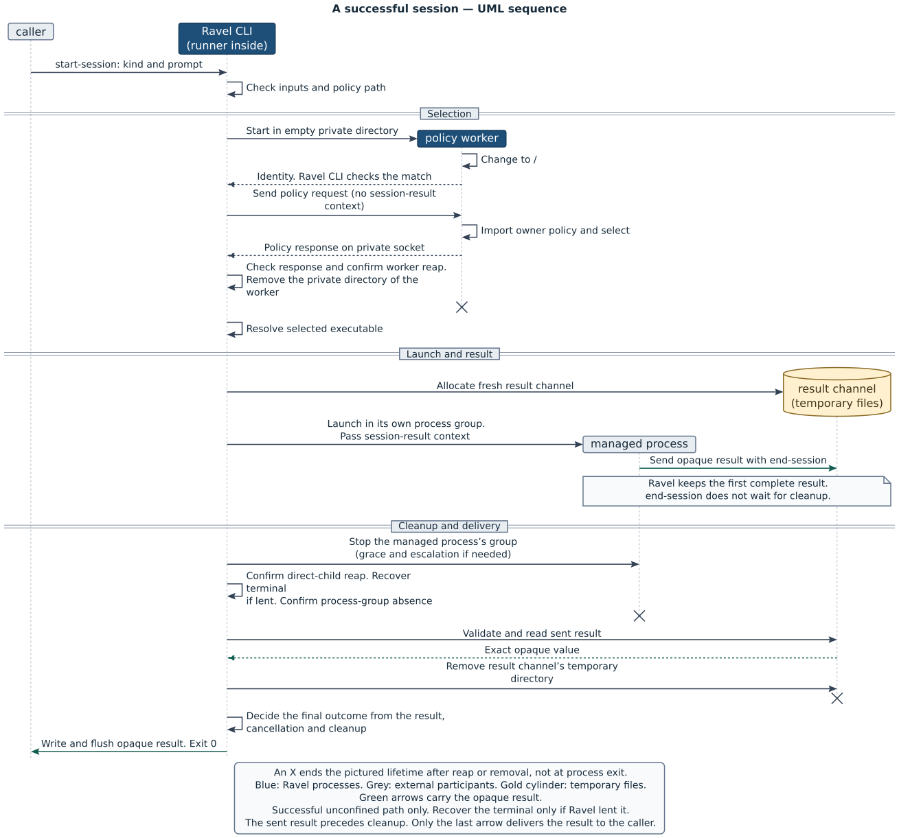
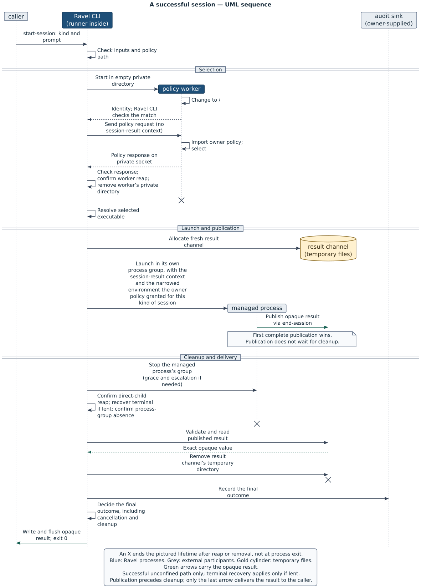
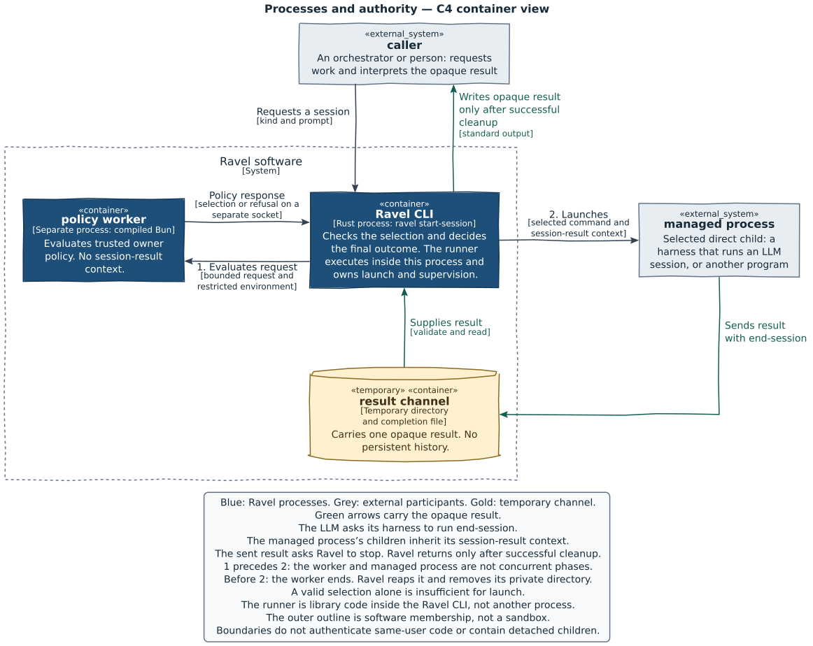
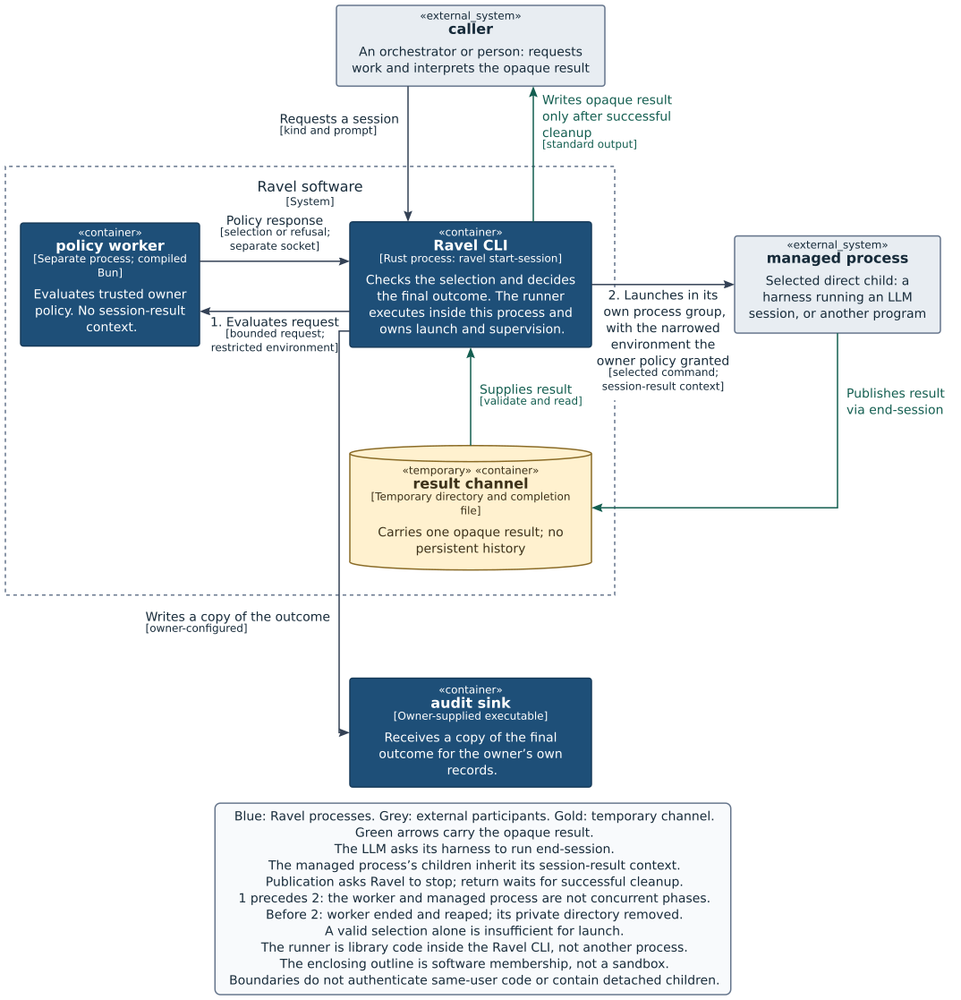
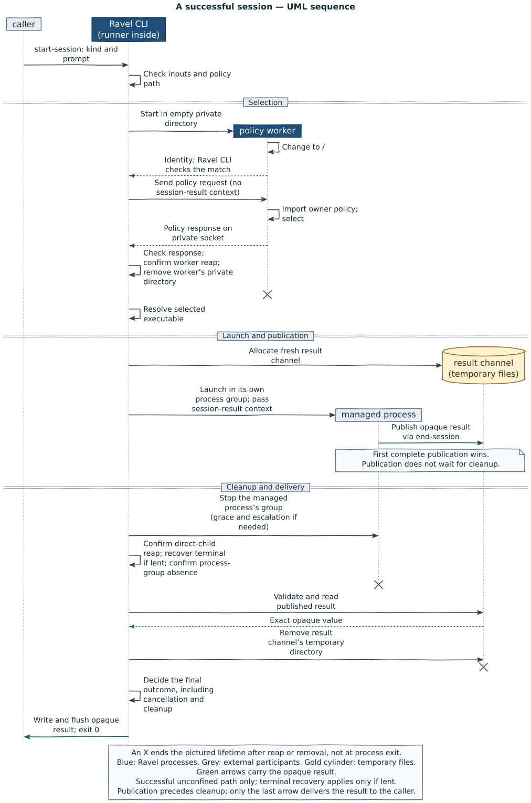
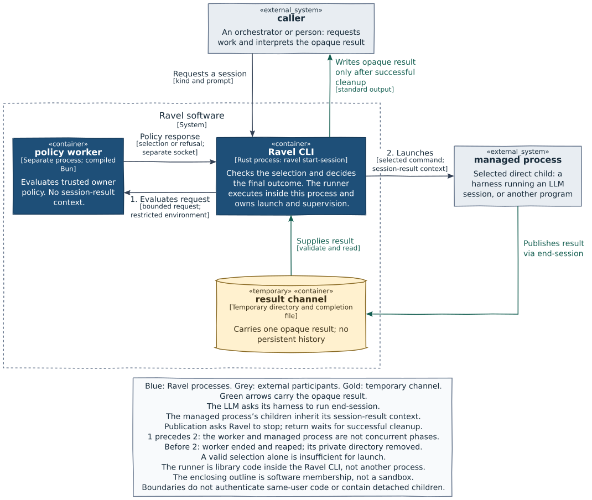

Trial: Typst/CeTZ

Both columns are at the book's chapter width (750px). The first figure in each pair is the published PlantUML SVG; the second is the Typst/CeTZ trial. "Long label + extra participant" is the scalability probe: no hand edit except the variant's content. Open the full-size link to see 1:1.




The same two figures on the engine primitives, crisp then hand-drawn at three roughness levels, at 750px. Text is unchanged; only outlines, lines, arrow shafts and cylinders wobble.

